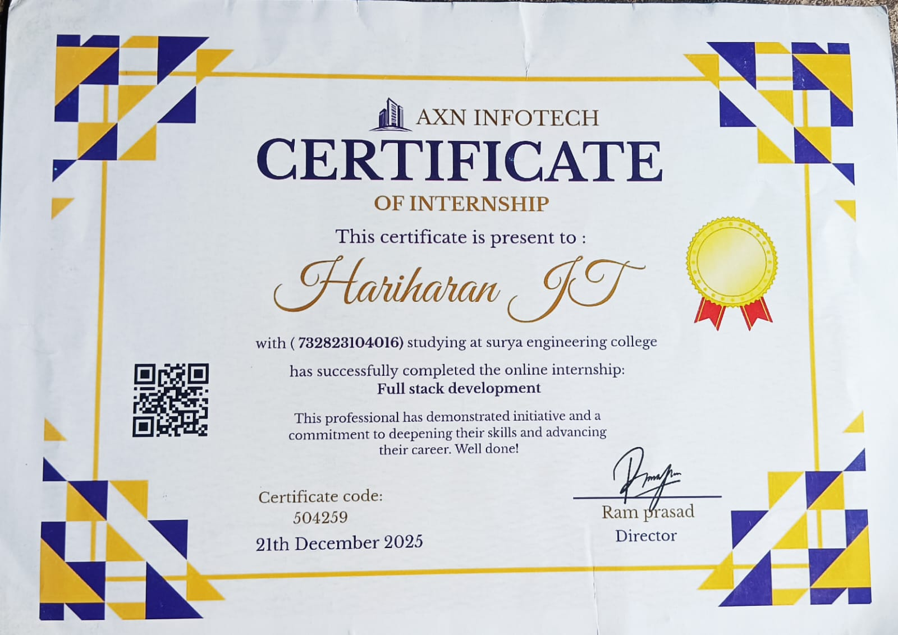
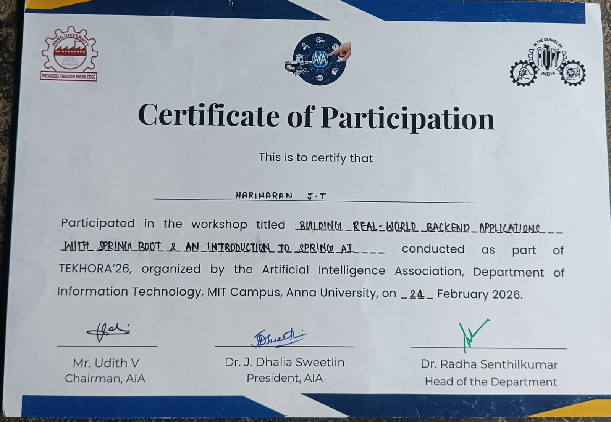
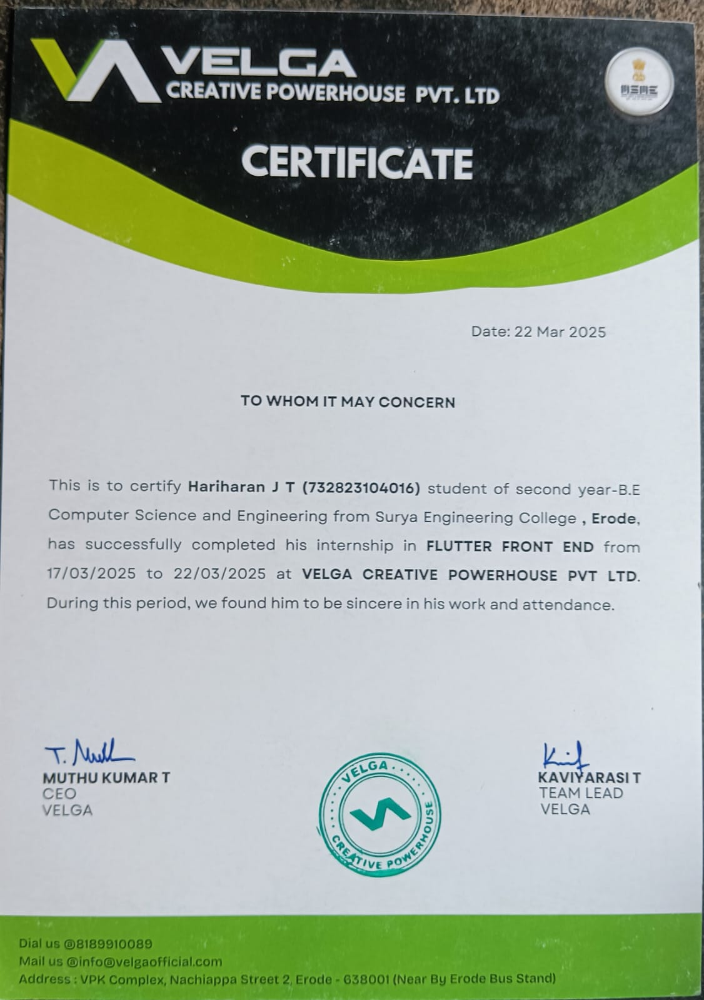

AVAILABLE FOR INTERNSHIPS
DEVOPS ENGINEER INTERN • CLOUD ENGINEER INTERN • SOFTWARE IT INTERN
MY CURRENT GOAL
Building a Career in DevOps & Cloud Engineering
My immediate objective is to secure a DevOps, Cloud, or Software Engineering internship where I can apply my technical knowledge, strengthen my practical skills, and gain valuable real-world industry experience.
My long-term vision is to become a DevOps Engineer specializing in cloud infrastructure, automation, CI/CD pipelines, containerization, and scalable deployment solutions while continuously learning modern technologies.
ABOUT ME
I am a Bachelor of Engineering in Computer Science and Engineering student graduating in 2027, with a strong passion for DevOps, Cloud Computing, Automation, and CI/CD. My goal is to build a successful career as a DevOps & Cloud Engineer by continuously improving my practical skills, working on real-world projects, and learning modern technologies.
I am currently strengthening my knowledge of AWS, Docker, Git, GitHub, Linux, and Python for automation & scripting, while expanding my expertise in GitHub Actions, Infrastructure as Code (IaC), containerization, cloud-native technologies, and modern DevOps practices.
I currently serve as the Student Project Team Lead for an ongoing Smart College Management System. My responsibilities include designing and managing the overall project architecture, coordinating development activities, maintaining the GitHub repository and version control workflow, and ensuring smooth collaboration across the team. The project includes an AI-powered Handwriting Verification module as one of its integrated features. After completing the project, I plan to deploy it on the cloud by applying the AWS and DevOps practices that I am currently learning.
I am actively seeking Internship, Associate, and Junior-level opportunities in DevOps Engineering, Cloud Engineering, and Software Engineering, where I can contribute to meaningful projects, learn from experienced professionals, and gain hands-on industry experience with modern development, automation, and cloud technologies.
I believe in continuous learning, collaboration, and building reliable, scalable, and efficient solutions. I am always open to connecting with professionals, mentors, recruiters, and fellow engineers who share an interest in DevOps, Cloud Computing, and emerging technologies.
Hariharan J T
BE Computer Science & Engineering (Final Year)
05 November 2004
Fresher
+91 9342663020
hariharancricket1817@gmail.com
18 Priya School Road, Samundipuram, Tiruppur - 641603, Tamil Nadu, India
Career Status
Ready to learn, contribute and grow in a professional environment.
Core Technologies
AWS • Docker • Git • Linux • Python • DevOps
Major Project
AI Powered Smart College Management System
Career Goal
DevOps Engineer focused on Cloud, Automation & CI/CD
QUICK FACTS ABOUT ME
Final Year BE CSE
Computer Science & Engineering student graduating in 2027.
DevOps Enthusiast
Passionate about automation, CI/CD and deployment workflows.
AWS Learner
Building cloud computing knowledge with modern AWS services.
Docker & Linux
Hands-on learning with containers and Linux environments.
Software Development
Enjoy building practical software solutions and web applications.
Team Lead
Leading the Smart College Management System development.
Tiruppur, Tamil Nadu
Based in India and available for internship opportunities.
Open To Work
Looking for DevOps, Cloud and Software Engineering internships.
WHY HIRE ME
Fast Learner
Quickly adapts to modern technologies, tools and development workflows.
Learning AgilityCoding Foundation
Strong understanding of software development fundamentals and problem solving.
ProgrammingDevOps Mindset
Focused on automation, CI/CD, cloud computing and infrastructure practices.
AutomationTeam Leadership
Leading the Smart College Management System with collaborative development.
LeadershipProject Driven
Enjoy building practical projects that strengthen technical expertise.
Hands-onCareer Focused
Actively seeking internship opportunities to contribute and grow.
Career ReadyProfessional Attitude
Committed to continuous learning, ownership, collaboration and delivering quality work.
Work EthicsInternship Ready
Ready to learn from experienced engineers and contribute to real-world DevOps projects.
Available NowTECHNICAL SKILLS
Programming
Languages & ScriptingWeb Development
Frontend FundamentalsDevOps
Current Career FocusCloud
Cloud TechnologiesOperating Systems
Development EnvironmentLearning Roadmap
Next TechnologiesMY LEARNING JOURNEY
Current Focus
Technologies & activities I'm working on
Smart College Management System
Leading architecture & project developmentDocker
Containerization & Compose PracticeLinux
Daily command line practiceAWS Cloud
Hands-on cloud learningInternship Preparation
Resume • Portfolio • LinkedIn • NaukriLearning Roadmap
Next technologies on my DevOps journey
PROJECTS & TECHNICAL EXPERIENCE
Practical projects, leadership experience and continuous learning towards becoming a DevOps & Cloud Engineer.
Smart College Management System
Project Team LeadSmart College Management System is an ongoing team project designed to digitize and simplify various academic processes. As the Project Team Lead, I am responsible for planning the project structure, coordinating the development team, maintaining the GitHub repository, managing version control, and contributing to both frontend and backend development. The project also includes an AI-powered handwriting verification module, and after completion I plan to deploy the application using AWS and modern DevOps practices.
👨💻 My Responsibilities
- Overall Project Architecture
- Team Coordination
- GitHub Repository Management
- Version Control
- Frontend Development
- Backend Development
- Deployment Planning
🎯 Project Highlights
- Integrated AI Handwriting Module
- Student & Staff Portal
- Assignment Management
- Role Based Authentication
- Future AWS Deployment
- DevOps Learning Integration
Flutter Development Workshop
Workshop ExperienceParticipated in a one-week Flutter Development Workshop to gain exposure to mobile application development. This workshop helped me understand Flutter basics, UI design concepts and cross-platform development. Although Flutter is not my primary career focus, it strengthened my understanding of modern software development practices.
Deaf Audio Enhancer
Frontend ContributorSupported an Electronics & Communication Engineering project by designing a simple responsive presentation website. My contribution was limited to creating the project's frontend interface for demonstration purposes.
EDUCATION JOURNEY
10th Grade
Billabong High International School
Completed Secondary Education while building the foundation of analytical thinking and learning.
59.40%12th Grade
Government Higher Secondary School
Developed a strong interest in technology, programming and engineering.
59.10%BE Computer Science & Engineering
Surya Engineering College
Final Year student currently learning DevOps, Cloud Computing, Docker, AWS, Git, Linux and Python while leading the Smart College Management System project.
CURRENT STATIONDevOps & Cloud Engineer
Career Goal
Seeking Internship, Associate and Junior level opportunities to gain industry experience and become a professional DevOps Engineer.
MY CAREER VISION
Where It Started
My journey began with software development and understanding how applications are designed and built. As I explored modern software engineering, I became increasingly interested in what happens after the code is written.
Why DevOps & Cloud?
What motivates me most is transforming software into reliable, scalable, and production-ready systems. DevOps combines automation, collaboration, CI/CD, cloud platforms, and continuous improvement into a single engineering mindset. It perfectly aligns with the type of engineer I aspire to become.
CERTIFICATION REGISTRY
A collection of certifications, workshops, and technical learning milestones that support my journey toward becoming a DevOps & Cloud Engineer.
oracle-cloud-cert
Container ID : #001
IMAGE
oracle/cloud-foundationTYPE
Cloud Computingfullstack-cert
Container ID : #002
IMAGE
developer/fullstackTYPE
Development{kind=link}
springboot-cert
Container ID : #003
IMAGE
springboot/backendTYPE
Workshop{kind=link}
flutter-cert
Container ID : #004
IMAGE
flutter/mobile-uiTYPE
Workshop{kind=link}
BEYOND SOFTWARE
Building software is my passion, but continuous growth also comes from curiosity, discipline, teamwork, and exploring new experiences.
Cricket
Cricket has taught me teamwork, leadership, consistency, and the importance of performing under pressure.
Continuous Learning
I enjoy learning new technologies, experimenting with tools, and staying updated with modern industry trends.
Building Projects
I prefer learning by building practical applications that solve real-world problems and improve my technical skills.
Nature Explorer
Travelling and exploring nature helps me stay creative, refreshed, and motivated while maintaining a healthy balance.
🚀 Portfolio Deployment Completed
Thank you for visiting my portfolio. Here's the final deployment summary.
Built & Designed By
Hariharan J T
This portfolio was personally designed and developed by me using HTML, CSS, JavaScript, Bootstrap, along with AI-assisted development to enhance UI/UX, content presentation, design consistency and overall user experience.
⚙ Technologies Used
🌐 Let's Connect
I'm actively seeking opportunities in DevOps, Cloud Engineering, and Software Engineering.